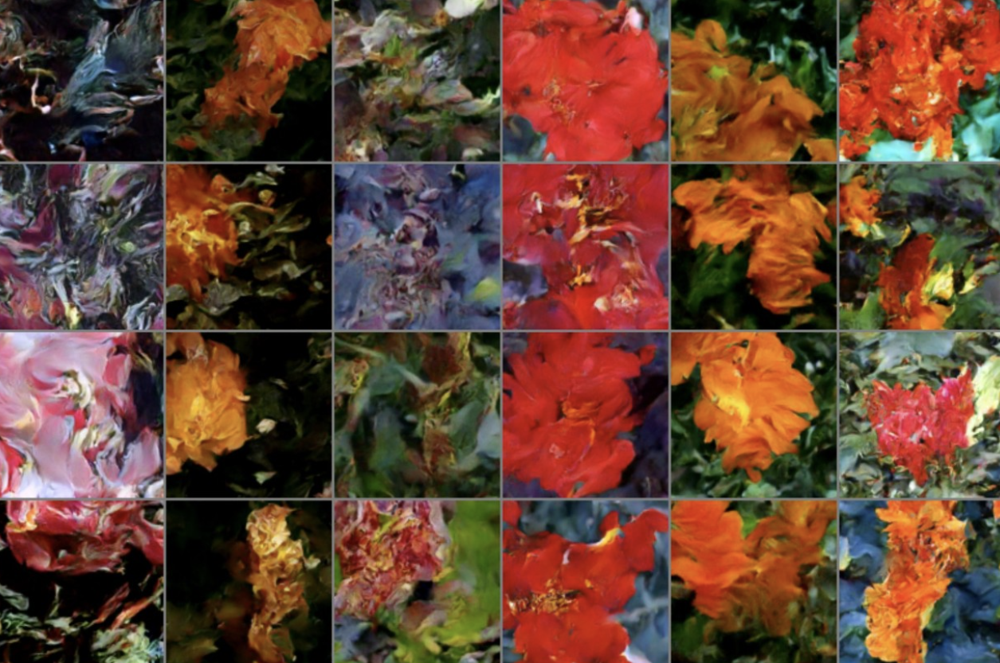

1 TURN BACK NOW. This is not ready, not by a long shot. Check back in weeks/months.
Just gathering my thoughts. This is a draft.
2 Introduction
Sometimes stuff takes too long to converge. Here’s an example:

3 Notes / Key insights from References:
3.1 SD3 paper: [1]
- pre-encode data (VAE) before training flow
- trick in attention for better stability
3.2 Improving the Training of RF: [2]
- “one relow is enough”
3.3 Ben recommended: [3]
- related: morph input data (e.g. rescale gaussian) to match output more closely before starting
3.4 PnP-Flow: [4]: https://github.com/annegnx/PnP-Flow
- ??
3.5 Stable Flow: [5]: https://omriavrahami.com/stable-flow/
- ??
4 Outline of This Tutorial
4.1 Just let it keep training
4.2 Get high “throughput”:
- Be mindful of batch size
- try encoding to latent space, VAE, VQVAE / VQGAN (try VAE for starters)
- Pre-encode everything (with augmentations encoded). h/t SD3
4.3 Metrics: how are we doing?
- Remember the loss is always “wrong”
- There is no reconstruction loss, but could do a distribution measure on integrated endpoints, e.g….
- Wasserstein loss / approximations. cf geomloss
4.4 Keeping it stable
- EMA
- attention trick h/t SD3
4.5 ‘Cheat’ outputs by fine-tuning your Decoder
- adversarial loss
- Wasserstein loss / approximations. cf geomloss
- For throughput (#2), train ReFlow first
- and again, pre-gen reflowed gen data,
- Reflow’d model you can actually do back-prop on if you want.
4.6 other notes
- If doing RK4 steps, you don’t need a lot. (tried 25 vs 100 vs 400, found no diff)
4.7 Aside - On reading probability-math….
5 References
[1]
P. Esser et al., “Scaling rectified flow transformers for high-resolution image synthesis,” in 41st International Conference on Machine Learning, ICML, Vienna, Austria, 2024. Available: https://openreview.net/forum?id=FPnUhsQJ5B
[2]
S. Lee, Z. Lin, and G. Fanti, “Improving the training of rectified flows.” 2024. Available: https://arxiv.org/abs/2405.20320
[3]
L. Klein, A. Krämer, and F. Noé, “Equivariant flow matching.” 2023. Available: https://arxiv.org/abs/2306.15030
[4]
S. Martin, A. Gagneux, P. Hagemann, and G. Steidl, “PnP-flow: Plug-and-play image restoration with flow matching.” 2024. Available: https://arxiv.org/abs/2410.02423
[5]
O. Avrahami et al., “Stable flow: Vital layers for training-free image editing.” 2024. Available: https://arxiv.org/abs/2411.14430
- 2025 Scott H. Hawley
Did you use this work as a reference? Please cite it:
@misc{stuff...
}